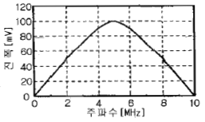
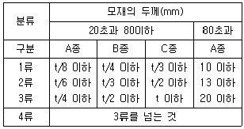
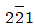
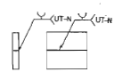

초음파비파괴검사기사(구) (2011-03-20 기출문제)
1과목: 초음파탐상시험원리
1. 상온 공기 중 음파의 속도는 약 몇 m/s인가?
- 150
- 340
- 2500
- 6000
(정답률: 알수없음)

2. 황동에서 종파의 음향 임피던스는 약 몇 g/cm2ㆍs인가? (단, 황동 내 종파속도는 4.43×105cm/s, 황동의 밀도는 8.42g/cm3이다.)
- 0.53×105
- 1.91×105
- 9.42×105
- 37.3×105
(정답률: 알수없음)
3. 초음파 탐상검사에 사용되는 시험편에 관한 설명으로 옳지 않은 것은?
- STB-A1 표준시험편과 IIW 시험편은 기본적으로 동일한 스펙을 갖는다.
- STB-A1과 A2 시험편을 조합하여 만든 STB-A3 시험편은 이동이 편리하다.
- STB-G 시험편은 사각탐상의 감도조정 및 탐촉자의 성능 시험에 사용된다.
- RB-4 대비시험편은 사각 및 수직탐상의 거리 진폭 특성곡선 작성에 사용된다.
(정답률: 알수없음)
4. 한 쪽에 스테인리스 강으로 클래드한 탄소강을 탄소강 쪽부터 2MHz 수직탐상하였을 때 경계면의 음압반사율은 약 얼마인가? (단, 탄소강에서의 음속은 6000m/s, 밀도는 7.8g/cm3, 스테인리스 강에서의 음속은 5500m/s, 밀도는 7.9g/cm3이다.)
- 1.9%
- 3.7%
- 7.6%
- 13.6%
(정답률: 알수없음)
5. 접촉매질(couplant)에 관한 설명으로 옳지 않은 것은?
- 일반적으로 사용되는 접촉매질로는 글리세린, 물, 기름, 그리스 등이 있다.
- 접촉매질은 피검체와 상호 화학작용이 일어나지 않는 것을 사용하여야 한다.
- 접촉매질의 사용 목적은 탐촉자와 탐상표면 사이의 공기를 제거하기 위함이다.
- 접촉매질은 피검체와의 음향임피던스 차이를 크게 하여 전달이 용이하게 한다.
(정답률: 알수없음)
6. 음향 임피던스(acoustic impedance)가 서로 다른 물질의 경계면에서 일으키는 물리적인 현상이 아닌 것은?
- 굴절
- 반사
- 투과
- 회절
(정답률: 알수없음)
7. 비파괴검사에서 정의하는 결함을 옳게 설명한 것은?
- 시험재료에서 검출되는 모든 불연속
- 재료의 물리적인 성질에 영향을 주는 흠
- 규정된 판정기준을 초과하여 불합격된 것
- 재료의 화학적인 성질에 영향을 주는 불완전
(정답률: 알수없음)
8. 기포누설검사를 하려고 시험체에 압력을 높여줄 때, 부주의로 시험할 물체에 혀용 압력(설계된 압력)을 초과한 경우 일어날 수 있는 현상은?
- 시험 용액의 특성이 변화함
- 정교한 누설 표시가 나타남
- 아무런 변화가 나타나지 않음
- 시험 물체의 파손 또는 폭발이 일어남
(정답률: 알수없음)
9. 다음 중 초음파탐상시험으로 가장 발견이 용이한 결함은?
- 선형으로 된 내부 균열
- 금속 내부에 개재된 슬래그
- 초음파의 진행 방향과 평행한 결함
- 초음파의 진행 방향과 직각으로 확대된 결함
(정답률: 알수없음)
10. 다른 누설검사와 비교하였을 때 기포누설검사의 가장 큰 장점은?
- 누설위치의 판별이 매우 빠르다.
- 누설량을 정량적으로 측정할 수 있다.
- 시험체 표면의 온도에 크게 영향을 받지 않는다.
- 시험용액의 점도(viscosity)영향을 받지 않는다.
(정답률: 알수없음)
11. 다음 중 용접부의 결함이 아닌 것은?
- 균열
- 콜드셧
- 용입불량
- 슬래그 개입
(정답률: 알수없음)
12. 침투탐상시험으로 검출이 불가능한 결함은?
- 석출경화강의 내부 합금 편석
- 주조품 표면의 열간 터짐
- 알루미늄 용접부 크레이터 균열
- 알루미늄 제품의 코로젼 피트(corrosion pit)
(정답률: 알수없음)
13. 와전류탐상시험에서 도체에 교류전류가 흐르면 도체 주위에 무엇이 생기는가?
- 방사선이 생긴다.
- 교번 자계가 생긴다.
- 공간에 리액턴스가 생긴다.
- 주기적으로 변하는 전압이 생긴다.
(정답률: 알수없음)
14. 방사선투과시험에 사용되는 감마선원에 대한 설명 중 틀린 것은?
- 선질을 조절할 수 없다.
- X선보다 경질방사선이다.
- 방사선의 발생을 중단할 수 없다.
- 방사능이 시간에 관계없이 일정하다.
(정답률: 알수없음)
15. 비파괴검사 중 와전류탐상시험으로 검출이 용이한 것은?
- 유리판의 표면 결함
- 금속판의 열처리 상태
- 유리봉의 표층부 결함
- 플라스틱판의 표층부 결함
(정답률: 알수없음)
16. 침투액의 성질에 관한 용어 중 침투액이 결함 속으로 침투하는 능력과 관계없는 것은?
- 점성
- 유화성
- 접촉각
- 적심성
(정답률: 알수없음)
17. 자분탐상시험에서 히스테리시스곡선의 종축과 횡축이 각각 나타내는 것은?
- 자속밀도, 투자율
- 자계의 세기, 투자율
- 자속밀도, 자계의 세기
- 자화의 세기, 자계의 세기
(정답률: 알수없음)
18. 시험체 표면에 대한 정보를 효율적으로 얻기 위해 행하는 비파괴검사법으로 볼 수 없는 것은?
- 육안검사
- 자분탐상시험
- 와전류탐상시험
- 방사선투과시험
(정답률: 알수없음)
19. 알루미늄 내에서 종파속도가 6.35×105cm/s로 진행한다. 이때의 주파수가 1MHz라면 이 초음파의 파장(mm)은?
- 0.317
- 0.635
- 3.175
- 6.35
(정답률: 알수없음)
20. 자분탐상시험에서 선형자화의 장점이 아닌 것은?
- 시험편을 직접 접촉하지 않아도 된다.
- 코일의 권수로 강도를 증가시킬 수 있다.
- 환봉의 길이 방향(종방향) 결함 검출에 유리하다.
- 시험편을 코일 속으로 통과시켜 운반할 수 있다.
(정답률: 알수없음)
2과목: 초음파탐상검사
21. 전도성 시험체에서 전자력으로 초음파를 발생시키고 센서 코일로 초음파를 수신하는 방법은 무엇인가?
- 유도초음파
- 전자기초음파
- 표면초음파
- 레이저초음파
(정답률: 알수없음)
22. 초음파 탐상검사에서 적산효과에 관한 설명으로 옳지 않은 것은?
- 작은 결함이 시험체 중앙에 존재할 때 나타나기 쉽다.
- 결함을 평가할 때에는 에코의 평균 강도를 기준으로 한다.
- 주로 시험체 두께가 얇고 저면 반사 횟수가 많을 때 나타난다.
- 결함 에코의 2회 반사파보다 2회 또는 3회 반사파가 높은 강도를 나타내는 경우를 말한다.
(정답률: 알수없음)
23. 결함의 크기가 같아도 위치에 따라서 표시되는 에코의 크기가 달라지는데, 동일 크기의 결함이 거리에 관계없이 동일한 에코 높이를 갖도록 전기적으로 보상해 주는 방법은?
- 거리진폭보상
- 증폭직진성 보상
- 시간거리보상
- 시간축 직진성 보상
(정답률: 알수없음)
24. 다음 시험편 중 경사각 탐촉자의 거리진폭특성곡선을 작성하는데 일반적으로 사용되지 않는 것은?
- RB-4 블럭
- STB-A2 블럭
- IIW-1형 블럭
- ASME 표준 교정시험편(Basic calibration block)
(정답률: 알수없음)
25. 탐촉자의 진동자 크기보다 작은, 동일한 크기의 기공과 융합불량이 거리가 같은 곳에 있다면 일반적으로 스크린 상의 에코 높이는 어떻게 표시되는가? (단, 음파는 결함에 수직방향으로 입사된다.)
- 기공의 에코가 융합불량 에코보다 높다.
- 융합불량의 에코가 기공 에코보다 높다.
- 기공 에코와 융합불량 에코가 똑같이 나타난다.
- 융합불량 에코는 나타나지만 기공 에코는 나타나지 않는다.
(정답률: 알수없음)
26. 주파수에 대한 응답곡선이 그림과 같을 때 탐촉자의 밴드폭(band width)은 약 얼마인가?

- 2MHz
- 4MHz
- 6MHz
- 10MHz
(정답률: 알수없음)
27. 다음 중 초음파 탐상검사로 검출하기 가장 어려운 결함은?
- 콜드셧
- 피로 균열
- 수축공
- 라미네이션
(정답률: 알수없음)
28. 초음파 탐상시험시 휨파(transverse wave)를 사용하는 주된 목적으로 옳은 것은?
- 박판의 두께를 측정하기 위하여
- 금속재료의 특성 중 탄성효과를 검출하기 위하여
- 용접물 튜브 및 관의 불연속부를 검출하기 위하여
- 후판의 불연속 중 적층(Lamination)의 유무를 확인하기 위하여
(정답률: 알수없음)
29. 거친 결정입자(coarse grain)로 된 물체를 검사할 때 결정입자 구조에 의해 가장 쉽게 산란될 수 있는 음파를 발생시킬 수 있는 주파수는?
- 1.0MHz
- 2.25MHz
- 5.0MHz
- 10MHz
(정답률: 알수없음)
30. 본드 이음부(Bonded Joint)를 탐상할 때는 직접접촉 수직 탐촉자를 사용한 다중반사법으로 탐상한다. 이 경우 본드가 안된 부분에서 나타나는 에코의 형상은?
- 본드가 잘된 부분보다 다중에코의 높이는 높다.
- 본드가 잘된 부분보다 다중에코의 감쇠는 심하다.
- 본드가 잘된 부분보다 다중에코의 간격이 좁아진다.
- 다중에코로 인하여 에코의 높이가 같게 나타난다.
(정답률: 알수없음)
31. 분해능은 떨어지지만 큐리점이 1210℃ 정도로 높아 고온에서 사용되는 초음파 탐상용 탐촉자 재료는?
- 수정(Quartz)
- 티탄산바륨(Barium Titanate)
- 니오비움산리튬(Lithium Niobate)
- 황산리튬(Lithium Sulfate Hydrate)
(정답률: 알수없음)
32. 초음파 탐상시험에서 시험체의 표면과 저면, 결함의 길이, 깊이 및 위치 등의 단면을 나타낼수 있는 표시방법은?
- A-Scope 방법
- B-Scope 방법
- C-Scope 방법
- P-Scope 방법
(정답률: 알수없음)
33. 일반화한 DGS 선도에서 횡축의 눈금 1이 의미하는 값은?
- 횡축은 빔거리를 나타내며, 1은 1mm를 의미한다.
- 횡축은 에코의 높이를 나타내며, 1은 1dB를 의미한다.
- 횡축은 빔거리를 나타내며, 1은 근거리음장 길이를 의미한다.
- 횡축은 에코의 높이를 나타내며, 1은 저면에코와 결함에코의 비가 1임을 의미한다.
(정답률: 알수없음)
34. 강재 중 종파속도가 5900m/s일 때 2Z10N 탐촉자의 원거리 음장에서의 분산각은 약 얼마인가?
- 15도
- 21도
- 27도
- 32도
(정답률: 알수없음)
35. 특수한 초음파 탐상검사를 적용하는 경우에 관한 설명으로 옳은 것은?
- 주사음향 현미경법이 표면에서의 분해능이 가장 우수하다.
- 초음파 홀로그래피는 음파의 입자성에 원리를 두고 있다.
- 주사형 음향 홀로그래피에서 표면근처를 탐상하기 위해서는 펄스 길이를 길게 하는 것이 효과적이다.
- 초음파 현미경에서는 초음파의 효과적인 전달과 분해능향상을 위해 1~2MHz의 저주파수를 사용한다.
(정답률: 알수없음)
36. 초음파 탐상검사에서 결함의 크기를 측정할 때에 정확성을 기하기 위해 고려하여야 할 사항으로 가장 거리가 먼 것은?
- 결함의 특성
- 시험체의 곡률
- 시험체의 용도
- 탐촉자 접근의 한계성
(정답률: 알수없음)
37. 결함의 크기를 20dB법으로 측정하는 경우 다음 중 가장 양호한 결과가 기대되는 경사각 탐촉자의 굴절각은?
- 45°
- 60°
- 70°
- 80°
(정답률: 알수없음)
38. 다음 중 초음파 탐상시험의 공진 탐상으로 가장 정확하게 알아낼 수 있는 경우는?
- 얇은 재질 내의 작은 불연속 위치
- 비교적 얇은 재질 내 본드(bond) 결함 검출
- 두께가 두꺼운 재질 내의 작은 불연속 위치
- 두께가 두꺼운 재질 내 확산과정에 있는 불연속 위치
(정답률: 알수없음)
39. 초음파 탐상검사시 사용되는 탐촉자의 압전효과에 관한 설명으로 옳지 않은 것은?
- 압전효과에는 정압전 효과와 역압전 효과가 있다.
- 정압전 효과는 초음파의 송신에 사용되고 역압전 효과는 초음파를 수신하는데 사용된다.
- 정압전 효과는 압전물질에 기계적인 압력을 주면 그 물질에 전압이 발생하는 효과를 말한다.
- 역압전 효과는 압전물질에 전압을 걸어주면 그 물질에 변형이 생겨 진동이 발생하는 효과를 말한다.
(정답률: 알수없음)
40. 펄스반사법 초음파 탐상장치를 사용하여 두께 20mm의 평판 맞개기 강용접부를 60°의 경사각 탐촉자로 탐상할 때 탐상기의 시간축 상에 50mm 되는 지점에 에코가 나타났다. 이 에코를 발생시킨 반사체는 탐촉자의 접촉면으로부터 얼마되는 깊이에 조재하겠는가?
- 5mm
- 10mm
- 15mm
- 17.2mm
(정답률: 알수없음)
3과목: 초음파탐상관련규격및컴퓨터활용
41. 압력용기용 강판의 초음파탐상 검사방법(KS D 0233)에서 탐상기의 성능 중 불감대에 대한 설명으로 옳은 것은? (단, 탐상기는 A 스코프 표시식인 경우이다.)
- 주파수가 5MHz 일 때 20mm 이하로 한다.
- 주파수가 5MHz 일 때 15mm 이하로 한다.
- 주파수가 2MHz 일 때 20mm 이하로 한다.
- 주파수가 2MHz 일 때 15mm 이하로 한다.
(정답률: 알수없음)
42. 보일러 및 압력용기의 재료에 대한 초음파탐상검사(ASME Sec.V. Art.5)에 따라 지시진폭이 거리진폭곡선의 몇 %를 초과하는 모든 불완전부를 조사하는가?
- 20%
- 40%
- 50%
- 60%
(정답률: 알수없음)
43. 보일러 및 압력용기의 용접부에 대한 초음파비파괴검사(ASME Sec.V, Art.4)에 따라 탐상검사시 탐촉자를 이동하는 속도(인치/초)는 통상 얼마를 초과해서는 안되는가?
- 4
- 6
- 8
- 10
(정답률: 알수없음)
44. 보일러 및 압력용기에 대한 표준초음파탐상검사(ASME Sec.V, Art.23 AE-213)에서 비교 반사체로 사용되는 Notch의 설명 중 틀린 것은?
- 형태는 보통 3종류로서 V-노치, 사각형-노치, U-노치가 있다.
- Notch의 폭은 작을수록 좋지만, 깊이의 2배보다 커서는 안된다.
- Notch의 길이는 진동자의 크기보다 커서는 안된다.
- Notch의 깊이는 상호 협의에 의해 정할 수 있다.
(정답률: 알수없음)
45. AWS D1.1에서 탐촉자의 치수는 탐촉자 선단에서부터 입사점까지 최대 얼마인가?
- 4인치(100mm)
- 3인치(75mm)
- 2인치(50mm)
- 1인치(25mm)
(정답률: 알수없음)
46. 금속재료의 펄스반사법에 따른 초음파탐상 시험방법 통칙(KS B 0817)의 시험조건에 해당하지 않는 것은?
- 시험 방법
- 사용한 주파수
- 탐상면의 상태
- 감도 보정량
(정답률: 알수없음)
47. 알루미늄의 맞대기용접부의 초음파경사각탐상 시험방법(KS B 0897)에 따라 탐상시 경사각 탐촉자의 빔 중심축에서의 치우침은 몇 도를 넘지 않아야 하는가?
- 2도
- 3도
- 4도
- 5도
(정답률: 알수없음)
48. 알루미늄의 맞대기용접부의 초음파경사각탐상 시험방법(KS B 0897)에 따라 두께 24mm와 두계 30mm의 두 판을 맞대기 완전용입 용접하여 탐상하니 길이 6mm의 결함 지시를 발견하였다. [표]를 이용하여 A종에 의한 흥의 분류는 어떻게 되는가?

- 1류
- 2류
- 3류
- 4류
(정답률: 알수없음)
49. KS B ⑤34-2000에 의하여 탐상기의 성능을 점검할 때 신호원으로 표준 시험편을 사용하지 않아도 되는 것은?
- 증폭 직선성
- 시간축 직선성
- 수직 탐상의 감도 여유값
- 경사각 탐상의 A2 감도
(정답률: 알수없음)
50. 다음의 표준 시험편(STB)과 대비시험편(RB)중 강용접부의 초음파 탐상검사에 규정되어 있지 않는 것은 어느 것인가?
- STB-A2
- STB-G
- RB-4
- RB-A6
(정답률: 알수없음)
51. 후판, 조강 및 단조품을 한국산업규격에 따라 초음파탐상검사를 할 때, 탐상감도의 조정, 수직탐촉자의 특성측정 및 탐상기의 종합성능측정 등의 목적으로 사용되는 표준 시험편은?
- STB-A1
- STB-A2
- STB-A3
- STB-G
(정답률: 알수없음)
52. 강용접부의 초음파탐상 시험방법(KS B 0896)에서 trans-fer method에 따른 수정조작 방법으로 옳은 것은?
- 시험편에 비하여 시험체의 표면이 거칠어 감쇠차가 있을 때 탐상강도를 수정하기 위하여 행하는 조작
- 종파가 시험체 내부를 진행하다 경사면에서 휨파로 바꾸어짐으로써 나타나는 시간축상의 측정범위를 수정하기 위하여 행하는 조작
- 입사각이 어느 일정각을 초과할 때 제1, 제2 임계 입사각이 나타나는데 이 임계각을 결정하기 위하여 행하는 조작
- 시험체 탐상 표면과 접촉매질 사이에 서로 다른 음향임피던스를 같게 하기 위하여 행하는 조작
(정답률: 알수없음)
53. ASTM E 114의 접촉매질에 쓰이는 SAE 10모터오일이 쓰여질 수 있는 표면의 거칠기 범위는? (단, Ra는 표면거칠기 평균 값을 의미함)
- Ra 5 ~100마이크로인치
- Ra 50~200마이크로인치
- Ra 30~300마이크로인치
- Ra 100~400마이크로인치
(정답률: 알수없음)
54. 보일러 및 압력용기에 대한 표준초음파탐상검사(ASME Sec. V. Art.23 SA-435)에서 강판의 수직빔으로 2인치 두께를 갖는 강판을 검사할 때, 전체 저면반사의 손실을 일으키는 불연속부의 지름이 2인치인 경우 평가는?
- 합격이다.
- 불합격이다.
- 시험편 방식으로 재검사한다.
- 저면반사 손실은 합부판정 기준이 아니다.
(정답률: 알수없음)
55. 보일러 및 압력용기에 대한 표준초음파탐상검사(ASME Sec. V Art.23 SA-388)에서 대형 단강품의 탐상시 탐촉자의 주사속도와 중복 범위로 옳은 것은?
- 주사속도 152mm/s 이하, 중복범위 최소 15%
- 주사속도 200mm/s 이하, 중복범위 최소 10%
- 주사속도 152mm/s 이상, 중복범위 최소 10%
- 주사속도 200mm/s 이상, 중복범위 최소 15%
(정답률: 알수없음)
56. 다음 중 정보를 검색하는 엔진에 속하지 않는 것은?
- 야후
- 네이버
- 구글
- 네스케이프
(정답률: 알수없음)
57. 전용선 대신 인터넷을 사용하며 터널링(tunneling)기법의 도입을 통하여 전용선과 같은 보안성을 보장하는 것은?
- 침입차단 시스템
- 침입탐지 시스템
- 가상 사설망 시스템
- 취약성 분석 시스템
(정답률: 알수없음)
58. 인터넷 사용자들이 관심 있는 분야별로 공지사항, 정보교환, 의견교환 등을 할 수 있도록 형성된 네트워크 뉴스 그룹은?
- Usenet
- Telnet
- Edunet
(정답률: 알수없음)
59. PC의 입력 장치에 해당하지 않는 것은?
- 스캐너
- 마우스
- 플로터
- 조이스틱
(정답률: 알수없음)
60. 전자우편(e-mail)의 올바른 사용으로 틀린 것은?
- 전자우편을 자주 점검하여 필요 없는 메일을 삭제한다.
- 수천명의 사용자에게 홍보 메일을 보낸다.
- 전송시 수신자의 주소를 확인한다.
- 중요한 메일을 받았을 때 답신을 보낸다.
(정답률: 알수없음)
4과목: 금속재료학
61. 고강도황동(high strength brass)의 조작으로 옳은 것은?
- δ + α
- α + σ
- α + β
- β + γ
(정답률: 알수없음)
62. 탄소강에 첨가되는 원소의 영향으로 옳은 것은?
- Mn은 고온에서 소성 및 주조성을 감소시킨다.
- P은 결정립을 치밀화하고 연신율을 증가시킨다.
- S은 강도와 충격치를 증가시키고 저온취성을 일으킨다.
- 구리는 고탄소강에서는 약 0.25% 이하로 제한하고 탄성한도를 증가시킨다.
(정답률: 알수없음)
63. 강에서 마텐자이트를 400℃ 직하에서 뜨임하면 조직은 어떻게 변하는가?
- 페라이트(ferrite)가 된다.
- 트루스타이트(troostite)가 된다.
- 소르바이트(sorbite)가 된다.
- 오스테나이트(austenite)가 된다.
(정답률: 알수없음)
64. 주철에 대한 설명 중 틀린 것은?
- 상온에서 소성변형이 용이하다.
- 강에 비해 연신율이 작다.
- 절삭가공이 가능하다.
- 메짐성이 있다.
(정답률: 알수없음)
65. 알루미늄의 결정은 면심입방격자(FCC)구조를 가지고 있다. 알루미늄 단결정에서 (

) 결정변의 면간거리는? (단, 알루미늄의 격자 상수는 4.044Å이다.)- 1.011Å
- 1.348Å
- 2.860Å
- 4.044Å
(정답률: 알수없음)
66. 재결정에 대한 설명 중 틀린 것은?
- 고순도의 금속일수록 재결정하기 쉽다.
- 재결정이 일어나는 온도를 재결정온도라 한다.
- 재결정 과정에서 연신율은 감소한다.
- 재결정이 일어날 때에는 그 전에 반드시 회복이 일어난다.
(정답률: 알수없음)
67. 열전대(thermocouple)는 제벡효과(Seebeck effect)를 활용하여 물체난 분위기의 온도를 측정하는데 활용되는 것으로 상용한도가 가장 높은 열전대는?
- R타입(백금-로듐/백금)
- K타입(크로엘/알루엘)
- J타입(철/콘스탄탄)
- T타입(구리/콘스탄탄)
(정답률: 알수없음)
68. 편상흑연주철, Zn-AI합금 등은 어떠한 형식의 방진 재료 합금인가?
- 복합형
- 쌍정형
- 전위형
- 강자성형
(정답률: 알수없음)
69. 다음 중 Ti(티타늄)합금에 대한 설명과 관련이 없는 것은?
- 고온 강도가 크다.
- 내식성이 우수하다.
- 항공기 재료로 적당하다.
- 수소, 질소에 강하다.
(정답률: 알수없음)
70. 표점거리 50mm, 직경이 10mm인 봉상시편을 인장시험한 결과, 최대하중은 4000kgf이었고 절단된 후의 표정거리는 60mm이었을 때의 인장강도는 약 몇 kgf/mm2인가?
- 12.7
- 25.4
- 50.9
- 65.9
(정답률: 알수없음)
71. AI-Si합금을 주조에 의하여 제조하는 경우에 있어 개량처리(modification)를 행하게 되는데, 이떄 개량처리 목적으로 사용되는 원소는 무엇인가?
- Na
- Cu
- Mg
- Ni
(정답률: 알수없음)
72. 금속분말을 압축성형하고 소결하여 부품을 만드는 분말야금법의 특징으로 맞는 것은?
- 제조과정 중 절삭가공을 생략할 수 없다.
- 제조과정에서 융점 이상으로 온도를 올려야 한다.
- 다공질의 금속재료를 만들기에 적합하지 않다.
- 용해-주조공법으로 만들기 어려운 합금을 만들 수 있다.
(정답률: 알수없음)
73. Fe-C 평형상태도에서 나타나는 변태 중 자기변태점은?
- A1 변태
- Acm 변태
- A2 변태
- A3 변태
(정답률: 알수없음)
74. 주철과 비교한 주강의 성질을 설명한 것 중 틀린 것은?
- 주철에 비하여 응고시 수축률이 작다.
- 주철에 비하여 용융점이 높다.
- 주철에 비하여 용접에 의한 보수가 용이하다.
- 주철에 비하여 기계적 성질이 우수하다.
(정답률: 알수없음)
75. 적색을 띤 회백색의 금속으로 비중이 9.75, 용융점이 265℃이며, 특히 응고할 때 팽창하는 금속은?
- Ce
- Bi
- Te
- In
(정답률: 알수없음)
76. 마그네슘 합금이 구조재료로서 사용되기 위한 특징이 아닌 것은?
- 비강도(강도/중량)가 커서 유대용 기기에 사용한다.
- 소성가공성이 낮아서 상온변형이 곤란하다.
- 감쇄능이 커서 소음방지 구조재로서 우수하다.
- 고온에서 불활성이며, 분말이나 절삭설은 발화의 위험이 없다.
(정답률: 알수없음)
77. 고부하 전기접점재료의 소결법에 관한 설명 중 틀린 것은?
- 액상소결은 환원분위기에서 실시한다.
- 고융점 금속분말로는 W, Mo, WC 등이 사용된다.
- 고융점 금속분말에 Co나 Ti 분말이 첨가된다.
- 용침법은 고융점 금속분말의 입도가 큰 5~10㎛일 때 사용한다.
(정답률: 알수없음)
78. 다음 중 금속의 응고와 관계가 없는 것은?
- 슬립
- 수축공
- 주상결정
- 수지상결정
(정답률: 알수없음)
79. 쾌삭감(快削鋼)의 제조에서 쾌삭성을 향상시키는 원소가 아닌 것은?
- S
- Se
- Cr
- Pb
(정답률: 알수없음)
80. 알루미늄 합금의 열처리는 단독 또는 2가지 이상 병행하여 실시된다. 열처리 기호와 그 의미가 옳은 것은?
- T2 : 담금질한 것
- T4 : 용체화처리 후 자연 시효시킨 것
- T6 : 용체화처리 후 안정화 열처리한 것
- T8 : 용체화처리 후 인공시효하여 냉간 가공한 것
(정답률: 알수없음)
5과목: 용접일반
81. 산소용기에 각인되어 있는 기호 중 TP가 의미하는 것은?
- 내압시험압력
- 최고충전압력
- 용기중량
- 내용적
(정답률: 알수없음)
82. 다음 중 프로판 가스의 성질을 설명한 것 중 틀린 것은?
- 액화하기 쉽고 수송이 편리하다.
- 온도변화에 따른 팽창률이 크고 물에 잘 녹지 않는다.
- 증발잠열 및 발열량이 작다.
- 폭발한계가 좁아 안전도가 높다.
(정답률: 알수없음)
83. 단층 수직, 상진 용접법으로 용융 슬래그 사이에 통전된 전류의 저항열에 의하여 전극 와이어 및 모재를 용융 접합시키는 용접은?
- 원자수소 용접
- 서브머지드 아크 용접
- 미그(MIG)용접
- 일렉트로 슬래그 용접
(정답률: 알수없음)
84. 용해 아세틸렌의 취급 시 주의사항으로 틀린 것은?
- 아세틸렌 용기는 아세톤의 분출을 방지하기 위해 눕혀서 두어야 한다.
- 아세틸렌 용기에는 충격이나 타격을 주어서는 안된다.
- 저장 장소에는 화기를 가까이 하지 말아야 한다.
- 아세틸렌가스가 누설되어 밸브가 얼었을 때에는 35℃이하의 온수로 녹여야 한다.
(정답률: 알수없음)
85. 용접이음설계에서 아래 그림의 도시기호 중 UT-N 설명이 맞는 것은?

- 맞대기 용접부의 초음파 탐상시험이 경사각탐상인 경우
- 맞대기 용접부의 초음파 탐상시험이 수직 탐상인 경우
- 맞대기 용접부의 초음파 탐상시험이 국제규격 탐상인 경우
- 맞대기 용접부의 초음파 탐상시험이 일반적인 탐상인 경우
(정답률: 알수없음)
86. 용접기의 정격 사용율이 40%이고, 정격 2차전류가 400A일때 실제 용접전류가 300A를 사용한 경우 허용사용율은 약 몇 %인가?
- 53.3%
- 60.3%
- 71.1%
- 75.4%
(정답률: 알수없음)
87. 기공 또는 용융 금속이 튀는 현상이 발생한 결과, 용접부 바깥면에서 나타나는 작고 오목한 구멍을 뜻하는 용어는?
- 피트(pit)
- 크레이터(crater)
- 홈(groove)
- 스패터(spatter)
(정답률: 알수없음)
88. 피복 아크 용접 시 아크의 길이에 대한 설명으로 올바른 것은?
- 아크의 길이는 심선의 직경 2배 이상이 좋다.
- 아크의 길이가 너무 짧으면 용융금속에 산화나 질화현상이 일어난다.
- 아크 길이가 너무 짧으면 스패터가 많게 된다.
- 아크 길이가 너무 짧으면 아크가 불연속이 되기 쉽고 발생되는 열양이 작게 되어 용입이 불량하게 된다.
(정답률: 알수없음)
89. 피복 아크 용접봉에서 저수소계 계통의 일반적인 건조온도와 시간은?
- 70~100℃에서 30~60분
- 70~100℃에서 1~2시간
- 100~250℃에서 30~60분
- 300~350℃에서 1~2시간
(정답률: 알수없음)
90. 수동 아크 용접기의 특성으로 맞는 것은?
- 정전류 특성인 동시에 정전압 특성
- 수하 특성인 동시에 정전류 특성
- 정전압 특성인 동시에 상승 특성
- 수하 특성인 동시에 정전압 특성
(정답률: 알수없음)
91. 비드 표면과 모재와의 경계선에 생기는 균열로써 침투탐상 검사에 의해 쉽게 검출할 수 있는 결함은?
- 힐 균열(heel crack)
- 토 균열(toe crack)
- 설퍼 균열(sulphur crack)
- 라멜네이션 균열
(정답률: 알수없음)
92. 아크전압이 20V, 아크전류는 150A, 용접속도가 15cm/min일 때 용접입열은 몇 Joule/cm인가?
- 12000
- 24000
- 22000
- 45000
(정답률: 알수없음)
93. 용접사에 의하여 발생 될 수 있는 용접결함이 아닌 것은?
- 용입 불량
- 언더 컷
- 융합 불량
- 라멜라테어 균열
(정답률: 알수없음)
94. 용접봉에서 모재로 용융금속이 옮겨가는 용융상태가 비교적 큰 용적이 단락되지 않고 옮겨가는 형식으로 서브머지드 아크용접과 같은 큰 전류에서 볼 수 잇는 것은?
- 자기 불림형
- 단락형
- 글로뷸러형
- 스프레이형
(정답률: 알수없음)
95. 다음 용접법 중 압접에 속하는 것은?
- 저항 용접
- 전자빔 용접
- TIG 용접
- 스터드 용접
(정답률: 알수없음)
96. 피복 아크 용접에서 아크길이와 아크전압과의 관계 설명으로 가장 적합한 것은?
- 아크 길이가 길어져도 아크 전압은 일정하다.
- 아크 길이가 길어지면 아크 전압은 증가한다.
- 아크 길이가 짧아지면 아크 전압은 증가한다.
- 아크 길이가 아크 전압은 서로 관계가 없다.
(정답률: 알수없음)
97. 가스절단 작업 시 형성되는 드래그(Drrag)길이는 판두께의 얼마 정도인가?
- 1/3
- 1/5
- 1/10
- 1/20
(정답률: 알수없음)
98. 직류 아크용접에서 정극성의 설명 중 틀린 것은?
- 용접봉의 용융속도가 느리다.
- 비드 폭이 좁다.
- 모재의 용입이 깊다.
- 모재에 (-)극, 용접봉에 (+)극을 연결한다.
(정답률: 알수없음)
99. 다음 중 초음파 검사법의 종류가 아닌 것은?
- 투과법
- 펄스반사법
- 공진법
- 맴돌이검사법
(정답률: 알수없음)
100. 직류 아크 용접기에는 발전형과 정류형이 있다. 발전형에 비료한 정류기형의 특징 설명으로 틀린 것은?
- 소음이 적다.
- 취급이 쉽고 가격이 싸다.
- 보수나 점검이 간단하다.
- 옥외현장 사용 시에 편리하다.
(정답률: 알수없음)